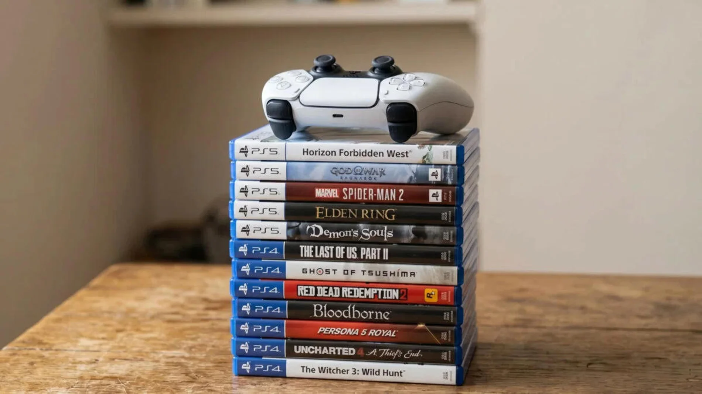
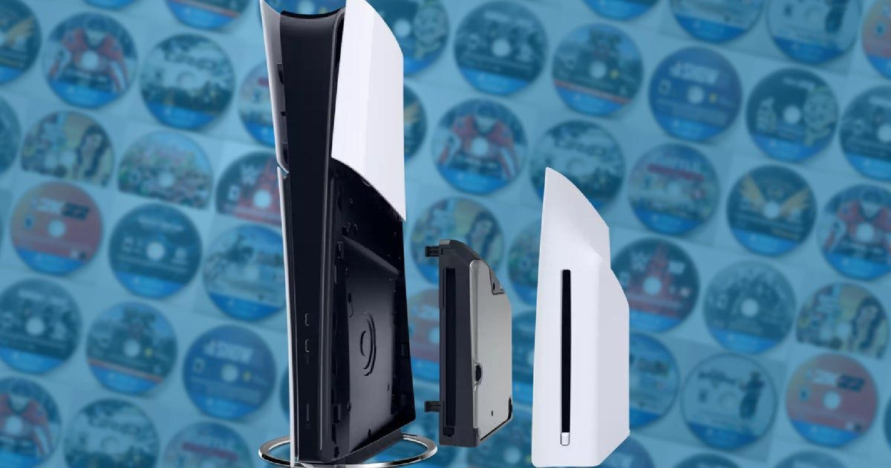

Sony estaría preparando el fin del formato físico en futuras versiones de PS5
Una nueva pegatina incluida en las cajas de PS5 ha levantado sospechas entre los jugadores: el lector de discos podría dejar de ser compatible con lanzamientos futuros.

Durante los últimos días, varios usuarios han compartido imágenes de una nueva pegatina incluida en las cajas de la PS5. En ella se menciona que el lector de discos podría no ser compatible con futuros juegos, lo que ha generado preocupación entre los jugadores que todavía prefieren el formato físico.
Aunque Sony no ha realizado ningún anuncio oficial, esta información coincide con rumores anteriores que apuntaban a una transición hacia un ecosistema completamente digital. El crecimiento de PlayStation Store y los servicios de suscripción encajan con esta posible estrategia.
Los jugadores coleccionistas temen perder el formato físico

Para muchos jugadores, los juegos en disco siguen siendo una parte fundamental de su experiencia. No solo por la posibilidad de conservar los títulos a largo plazo, sino también por el valor sentimental y la seguridad que ofrece tener una copia física independiente de servidores o licencias digitales.
Además, el mercado de segunda mano y las tiendas especializadas podrían verse afectadas si Sony decide eliminar por completo el formato físico en futuras generaciones de PlayStation.
La estrategia digital encaja con los planes de Sony

En los últimos años, Sony ha reforzado su apuesta por el mercado digital. Las ventas en PlayStation Store, los servicios de suscripción y las actualizaciones constantes del ecosistema online muestran una clara dirección hacia un futuro más digitalizado.
La pegatina encontrada podría ser simplemente un aviso preventivo, pero también podría indicar que Sony está preparando el terreno para una transición más profunda en la próxima generación de consolas.
Fuente original: Vandal — https://vandal.elespanol.com